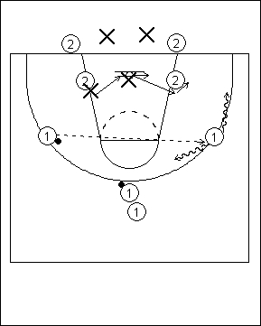

Catégorie : REBOND (Reb-10)
Déroulement
- Trois files de joueurs : 1, 2 et X. Un ballon pour deux dans la file 1.
- Les deux premiers joueurs de la file 1 débutent en position d’ailier et se passent le ballon. Les deux premiers joueurs 2 sont en position de low post et les deux premiers X jouent en défense sur eux. Les X ajustent leur position en fonction de la situation du ballon : "deny" du côté du ballon, "pistols" à l’help side. A un certain moment, un des joueurs 1 shoote : les deux joueurs 2 jouent le rebond offensif et les X le rebond défensif.
- Après cet exercice, les 1 vont dans la file 2, les 2 vont en X et les X vont en 1 avec le ballon.
Coaching points
- D’abord passer lentement le ballon pour travailler les positions défensives, puis accélérer le rythme.
- Demander aux deux joueurs 1 de prendre de temps à autre un dribble ou deux vers le centre ou vers la baseline pour faire travailler plus les défenseurs et aussi pour modifier le travail du rebond.